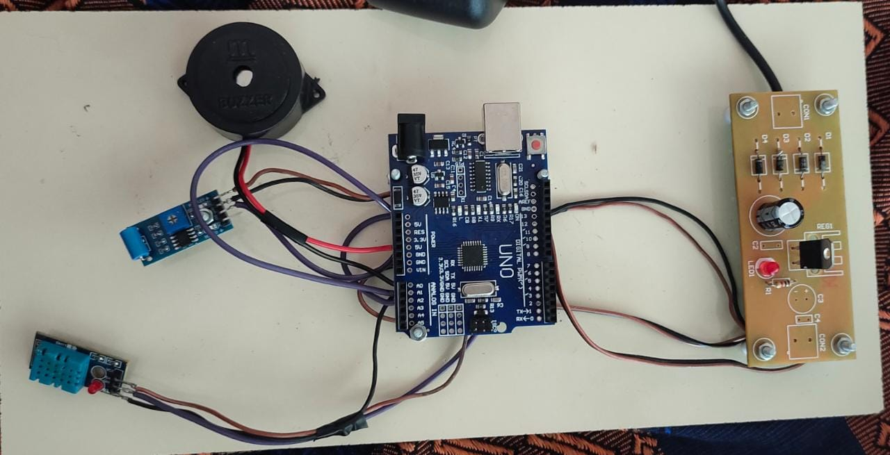

Abstract
Problem Statement
To Detect any anonymous activity in ATM, and to safegaurd the ATM.
Problem Solution
Hence after analyzing the problems and requirements , we have decided to create a ATM theft detector. This idea is selected as a best suited solution.

Solution
- ⟶ Detecting activities such as breaking and welding.
- ⟶ It buzzers when it detects any activities mentioned above.
- ⟶ It protects ATM from robbers.
- ⟶ In this project we have tried to show a smart way to safegaurd ATM.